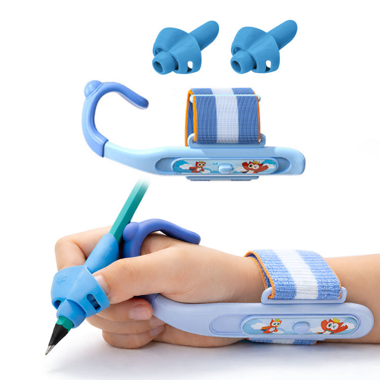

THE PERSON BEHIND MINIGO
자꾸 고쳐 잡아주기보다,
스스로 익히게 하고 싶었습니다.
아이의 작은 손이 연필과 친해지는 시간. 미니고는 그 시작을 조금 더 편안하게 돕는 연필교정기를 만듭니다.

몇 글자 쓰고
손을 털던 아이
미니고를 시작한 장면에는 연필을 쥔 채 손가락에 힘을 잔뜩 주고 있던 아이가 있습니다.
몇 글자를 쓰고는 손을 털었어요. 옆에서 “엄지는 여기, 검지는 여기” 하며 고쳐 잡아줘도 잠시뿐이었습니다. 자꾸 설명하는 말보다 손이 자연스럽게 자리를 기억할 수 있는 작은 도구가 필요하다고 생각했습니다.
연필에 끼우는 간단한 모양을 그리기 시작했습니다. 어느 방향으로 잡아야 하는지 한눈에 보여야 하고, 아이가 좋아하는 색을 직접 고를 수 있어야 했습니다. “고쳐 잡아주기보다 스스로 익히게 하자.” 미니고의 연필교정기는 그 마음에서 시작됐습니다.
맞는 모양을
다시 찾는 일
가장 힘들었던 건 보기에는 괜찮은 첫 샘플을 다시 만들기로 결정한 순간입니다.
연필 굵기에 따라 너무 헐겁거나 빡빡했고, 아이가 어느 구멍에 손가락을 두어야 할지 바로 알아보기 어려웠습니다. 어른의 눈에는 작은 차이였지만, 처음 연필을 잡는 손에는 큰 차이였습니다.
출시를 서두르기보다 구멍의 위치와 잡히는 모양을 다시 살폈습니다. 설명하지 않아도 아이가 직접 끼우고 잡아볼 수 있을 때까지 고쳤습니다. 그 과정을 지나며 미니고가 절대 타협하지 않을 기준도 분명해졌습니다.
아이의 손을 억지로 맞추는 도구가 아니라, 손이 편안한 자리를 스스로 찾게 돕는 도구를 만듭니다.
절대 타협하지 않는 한 가지 · 아이가 스스로 잡을 수 있는 편안한 모양
“연필 잡아”라는
말이 줄어든 집
한 보호자에게 “이제 연필 잡으라는 말을 덜 하게 됐어요”라는 메시지를 받았습니다.
아이가 먼저 원하는 색을 고르고 연필에 끼운 뒤, 손가락 자리를 찾아 잡는다고 했습니다. 글씨가 갑자기 달라졌다는 말보다, 연필을 잡는 시간이 서로에게 조금 편안해졌다는 말이 더 오래 남았습니다.
그 메시지를 읽고 알았습니다. 작은 도구 하나가 모든 문제를 해결할 수는 없어도, 아이가 스스로 시작하는 순간을 만들 수는 있다는 것을요. 저는 새 제품을 볼 때마다 그 집의 조용해진 책상 풍경을 떠올립니다.
첫 스케치에서
세 가지 선택까지
아이의 손과 사용 장면을 살피며 연필교정기 구성을 넓혀왔습니다.
-
작은 손을 위한 첫 스케치
연필을 잡을 자리를 눈과 손으로 쉽게 알 수 있는 모양을 그렸습니다.
-
7컬러 연필교정기
아이가 좋아하는 색을 직접 고를 수 있는 일곱 가지 구성을 소개했습니다.
-
손목 보조형으로 확장
손가락 위치와 손목 자세를 함께 살필 수 있는 형태를 더했습니다.
-
쫀득쫀득 8개입 구성
여러 색을 넉넉하게 골라 쓸 수 있는 투명 그립형 세트를 선보였습니다.
MY PROMISE